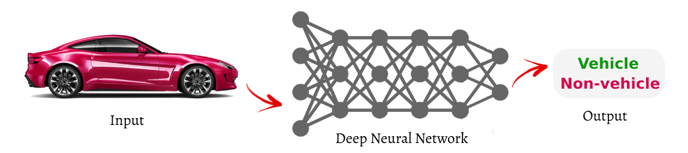

University Lecture Materials

Deep Learning from Scratch
Lectured Online (Fall 2021)
- GitHub Repository (Slides and Codes)
- Slide#9 - Reinforcement Learning
- Slide#8 - Generative Adversarial Networks (GANs)
- Slide#7 - Convolutional Neural Networks (CNNs)
- Slide#6 - Recurrent Neural Networks (RNNs)
- Slide#5 - Frameworks
- Slide#4 - Hardware and Platforms
- Slide#3 - Feeding Deep Neural Networks (DNNs)
- Slide#2 - Working with Data
- Slide#1 - Basics
- Slide#0 - Intro and Main Concepts
Computational Intelligence
Lectured at the University of Guilan (Fall 2019 to Spring 2021)
- GitHub Repo - Class of Spring 2021
- GitHub Repo - Class of Fall 2020
- GitHub Repo - Class of Spring 2020
- GitHub Repo - Class of Fall 2019
- Slide#12 - Swarm Intelligence
- Slide#11 - Genetic Algorithm and Programming
- Slide#10 - Evolutionary Computation
- Slide#9 - Fuzzy Controllers
- Slide#8 - Fuzzy Logics and Inferences
- Slide#7 - Fuzzy Calculations and Relations
- Slide#6 - Fuzzy Basics
- Slide#5 - Deep Neural Networks (DNNs)
- Slide#4 - Applications of Neural Networks
- Slide#3 - Neural Networks Models and Architectures
- Slide#2 - Artificial Neural Networks (ANNs)
- Slide#1 - Fundamental Concepts
- Slide#0 - Intro and Main Concepts
Software Laboratory
Lectured at the University of Guilan (Fall 2018)
- Slide#7 - DBMS Applications (Microsoft Access)
- Slide#6 - Presentation Applications (Microsoft PowerPoint)
- Slide#5 - Spreadsheet Applications (Microsoft Excel)
- Slide#4 - Word Processing Applications (Microsoft Word)
- Slide#3 - Software
- Slide#2 - Hardware
- Slide#1 - The History of Computers
- Slide#0 - Intro and Main Concepts